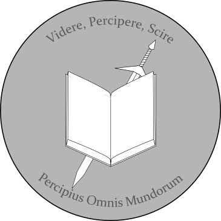

We accept neither call nor email. To contact us, or book a consultation, Please head to our office at 105 George St, Ryde PO33 2JE, UK, adjacent to the Ryde library, or send us mail. Alternatively, we accept fax at 01983 802 537.